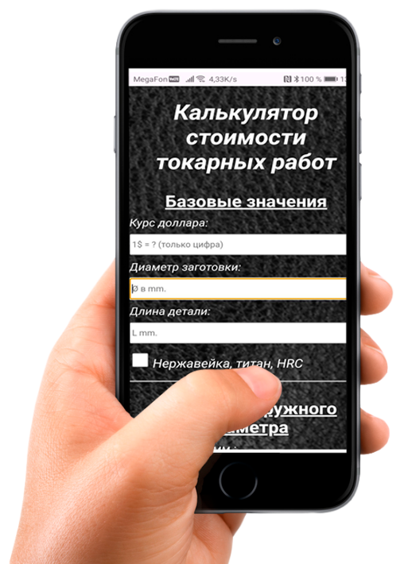

* Помеченые поля доступны в полной версии для смартфона на Android.
** Цена детали может быть:
- уменьшена за счет упрощения технологии, опт, индивидуальная скидка и т.д.
- увеличена, если требуются дополнительные оправки, люнет, планшайба, смена патрона, спец.инструмент и т.д.
*** Акции. Например, 30 наценит деталь на 30%.
Укажите отрицательное число (например -50), исли нужно сделать скидку.
Токарный калькулятор. Версия для смартфона на Android
Узнайте, сколько денег вы теряете на каждом заказе из-за неточного расчёта.
🔍 «Проверьте, не работаете ли вы себе в убыток»
Введите параметры последнего заказа → калькулятор покажет:
Реальную минимальную стоимость детали.
💸 «Если разница ощутимая — вы работаете в минус. Это происходит у 63% токарей, которые считают "на глаз"»
То, что вы видите на этой странице — лишь лёгкая «проба пера». Полная версия калькулятора токарных работ доступна только в мобильном приложении для Android.

Там — всё, что нужно настоящему мастеру, чтобы быстро сориентироваться в цене за свою работу:
✔️ Расчёт по любым операциям
✔️ Все поля доступны для расчетов
✔️ Сопутствующие услуги, если они необходимы
✔️ Работа без интернета — в цеху, на производстве, в дороге
Это не просто калькулятор — это ваш цифровой помощник в ценообразовании, который экономит время и помогает не просчитаться.
👉 Готовы перейти на новый уровень точности и удобства?
Полная версия — 490 ₽. Оплата через Telegram. Доступ навсегда. Оплата любой картой или ЮMoney.
Уже скачали: 632 токаря
Ваше время дорого. Доверьте расчёты инструменту, который работает на вас.
Ответы на частые вопросы:
- Откуда берутся цифры для расчета?
Цены на токарный работы взяты не из головы. Они собраны из открытых источников на различных сайтах и форумах по всему миру. Далее цены на различные операции усреднены и добавлены в расчет.
К примеру, за такую-то операцию один мастер берет 1000 руб., а его сосед 100 руб. Значит среднее значение будет (1000+100):2 = 550 руб.
- Калькулятор дает точную цену работы?
Токарный калькулятор посчитает лишь ориентировочную цену, исходя из усредненных расценок на токарные работы, найденых в открытых источниках. В каждом конкретном случае расчеты калькулятора могут не совпадать с расценками на токарные работы
в Вашем регионе. Помимо региона, на стоимость токарных работ так же влияет квалификация токаря, модель токарного станка и еще ряд персональных факторов.
Не стоит брать рассчеты данного калькулятора как единственно верную цену за токарные работы. Для кого-то рассчеты калькулятора покажутся слишком дорогими, кому-то слишком дешевыми,
а некоторым вообще удобнее считать цену за час работы.
Но в любом случае у Вас будет средняя цена, которую уже можно скорректировать под себя.
- Сколько стоит и что я получу?
Цена токарного калькулятора 490 рублей. Нажав на кнопку Вы перейдете в телеграм-бота для оплаты токарного калькулятора. После оплаты Вы получите ссылку на скачивание приложения для смартфона на платформе Android. Устанавливаете себе на смартфон и пользуетесь без ограничений.
- ТГ-бот оформляет подписку на месяц. Оплату нужно делать каждый месяц?
Нет. Оплата разовая. По истечении срока токарный калькулятор продолжит работать без каких-либо ограничений. Подписка на 30 дней просто дает Вам время на то, чтобы Вы установили себе приложение в течении месяца.
- Где я смогу установить\пользоваться этим приложением?
APK приложение создано для смартфонов\планшетов на базе Android. На айфоне или компьютере\ноутбуке приложение работать не будет.